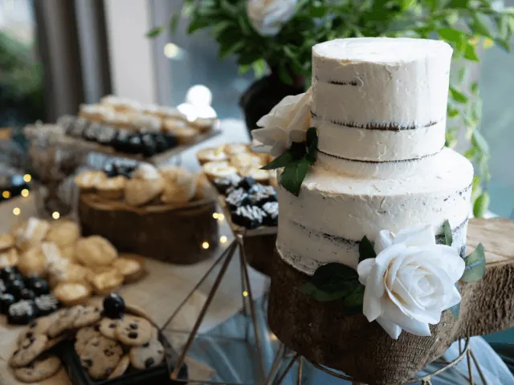

Partnerbijdrage
Heel vervelend, maar hier kan jij de lekkerste bruidstaarten proeven!
Gepubliceerd op 31 maart 2023, bijgewerkt op 26 februari 2024
Onderdeel van de gids Trouwen in Nijmegen

Een van de hoogtepunten van je bruiloft is het aansnijden van de bruidstaart. Maar hoe kies je de perfecte taart voor jullie speciale dag? Er zijn zoveel smaken, maten, kleuren en ontwerpen om uit te kiezen, dat het overweldigend kan zijn.
Wat is belangrijk bij het kiezen van een bruidsstaart?
Het beste advies dat we kunnen geven is: proef! Er is geen betere manier om te beslissen welke smaak bij jou past dan door het te proeven. Veel bakkers bieden proeverijen aan, waarbij je verschillende smaken kunt proeven en kunt bespreken welke stijl en ontwerp het beste bij jou en je bruiloft past.
Naast de smaak en het ontwerp, is het belangrijk om rekening te houden met de grootte van de taart. Hoeveel gasten heb je en wil je een taart die genoeg is voor iedereen of kies je liever voor een kleiner ontwerp en een ander dessert? Bespreek dit met je bakker om de juiste keuze te maken.
En vergeet niet: de bruidstaart is niet alleen een traktatie voor de smaakpapillen, het is ook een belangrijk onderdeel van de decoratie op je bruiloft. Zorg er dus voor dat het ontwerp past bij de sfeer en stijl van je bruiloft.
Kortom, de keuze voor de perfecte bruidstaart kan overweldigend zijn, maar door te proeven en te bespreken met je bakker, kun je een taart vinden die niet alleen heerlijk smaakt, maar ook past bij de stijl en sfeer van jullie speciale dag.
Wat voor bruidstaarten heb je allemaal?
Er zijn ontelbaar veel mogelijkheden als het gaat om bruidstaarten. Hieronder noemen we enkele van de meest populaire soorten:
- Traditionele taarten: Denk aan een klassieke witte taart met meerdere lagen en bloemdecoraties. Dit is een populaire keuze voor bruidstaarten.
- Naked cakes: Dit zijn taarten zonder frosting op de zijkanten, waardoor je de lagen cake en vulling goed kunt zien. Ze hebben vaak een rustieke uitstraling en worden vaak gedecoreerd met vers fruit en bloemen.
- Semi-naked cakes: Dit zijn taarten met een dunne laag frosting op de zijkanten, zodat de lagen cake en vulling er nog steeds doorheen schijnen.
- Geometrische taarten: Dit zijn taarten met een strakke, moderne uitstraling, vaak gedecoreerd met geometrische patronen of metallic accenten.
- Themed cakes: Dit zijn taarten die zijn ontworpen om bij een bepaald thema of kleurenschema van de bruiloft te passen.
- Cupcake-torens: Dit zijn stapels van kleine cupcakes die zijn versierd met frosting en andere decoraties.
- Desserttafels: Dit zijn tafels gevuld met een assortiment van mini-desserts, zoals cakepops, macarons en koekjes, in plaats van één grote taart.

Waar in Nijmegen proef je de lekkerste bruidstaarten?
Voor de lekkerste proeverijen hoef je de stad Nijmegen niet uit. Wij hebben een overheerlijke lijst gemaakt, waar jij je vingers bij aflikt.
Strik patisserie: bij Strik kun je al een proeftaartje krijgen voor €9,95. En ze hebben er een heleboel. Je mag komen kiezen uit hun uitgebreide assortiment of met een eigen idee komen.
ZOET: Bij ZOET krijg jij je eigen originele taart. Zoals zij zelf zeggen: ‘Dit is jouw moment om all-out te gaan.’
Cheffi’s Pastries: Klaar om te proeven? Maak dan een afspraak en snel je naar het NYMA-terrein in Nijmegen. Nadat er een globaal smakenpalet duidelijk is, zullen jullie een proeverij krijgen die helemaal bij jullie past.
MOES: bij Moes houden ze de taartjes kleiner, maar daardoor heb je wel voor ieder wat wils, en je kunt lekker veel proeven. Ze hebben kleine taartjes, zoete hapjes en andere mini’s.
Trashure taarten: Alleen al de foto’s laten het water in je mond lopen. Echte grote klassieke bruidstaarten en zelfs eetbare bruidsparen. Hoe goed klinkt dat?
Chocolaterie Marcus: Ben jij meer van de chocolade dan de taart? Dan staat Marcus voor je klaar, hij kan de meest bijzondere chocoladefiguren maken. Heb jij jezelf met je partner al eens voorgesteld als chocoladepaar?
DE ULTIEME TROUWGIDS VIND JE HIER
BEKIJKBakkerijen en patisserie in Nijmegen
Zin om te beginnen? In onze bedrijvengids vind je alle 24 bakkerijen in Nijmegen, met openingstijden, kenmerken en een kaart.
Bekijk alle 24 bakkerijen in Nijmegen
Heb je zelf een bakkerij? Laat je hier uitlichten.